Living VM Document
CIS 3367
Architecting Operating System Security
Portfolio Lab Notebook
Spring 2026
University of South Florida
Professor Thomas E. Moore-Pizon
Maxwell King
About This Document
This living document serves as the lab notebook and portfolio for CIS 3367. It is updated throughout the semester to document lab activities, configurations, observations, and screenshots. It is organized into two tracks: Class Work (directed assignments) and Independent Work (self-guided exploration).
Lab Environment: Florida CyberHub (labs.floridacyberhub.org)
Virtual Machines:
• SERVER25 - Windows Server 2025 (IP: 10.21.28.244)
• UBUNTU24 - Ubuntu 24 Linux (IP: 10.21.28.245)
• WINDOWS11 - Windows 11 Client (IP: 10.21.28.246)
Class Work
CW-1 - VM Setup, Active Directory & Domain Users
This assignment covers establishing baseline connectivity on both virtual machines, configuring Active Directory Domain Services on the Windows Server as a domain controller, and creating user accounts for a simulated three-person dentist office. An attempt was also made to join the Ubuntu machine to the domain, which required significant troubleshooting and is documented in the Observations section.
Network Connectivity
Ran ipconfig /all on SERVER25 to confirm DHCP assigned an IP, gateway, and DNS servers.
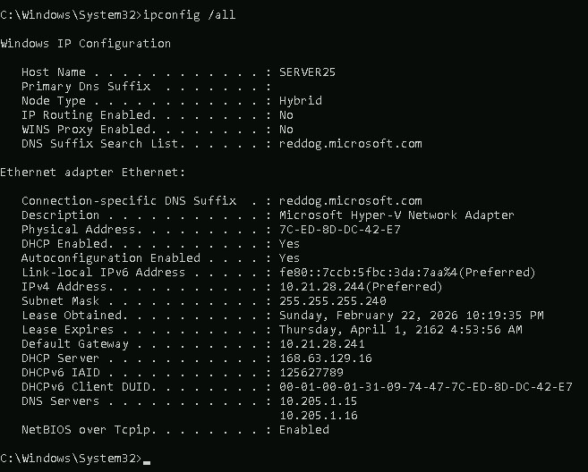
Figure 1 - SERVER25 ipconfig /all confirming DHCP-assigned IP, gateway, and DNS configuration
Active Directory Domain Services Installation
AD DS was installed through Server Manager. Selected the role, added the required features when prompted, and let it install.
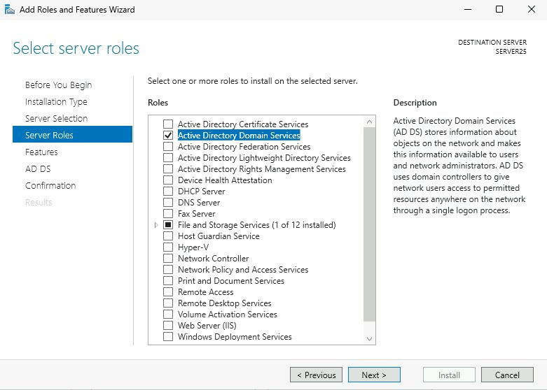
Figure 2 - Server Roles wizard with Active Directory Domain Services selected
Promoting to Domain Controller
After install, promoted the server to a domain controller by creating a new forest named dentist.local. Set a DSRM recovery password when prompted.
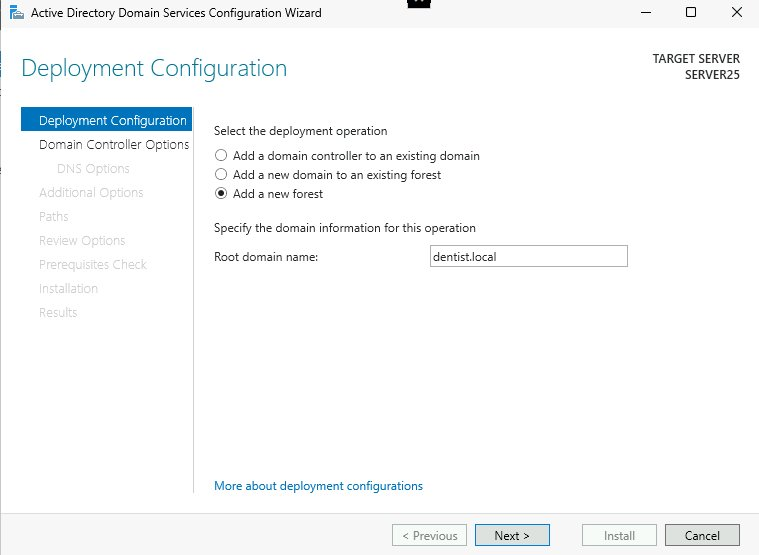
Figure 3 - AD DS Configuration Wizard showing Add a new forest with dentist.local as the root domain
Post-Reboot Confirmation
Server rebooted automatically after promotion. Server Manager came back showing AD DS and DNS both installed and green.
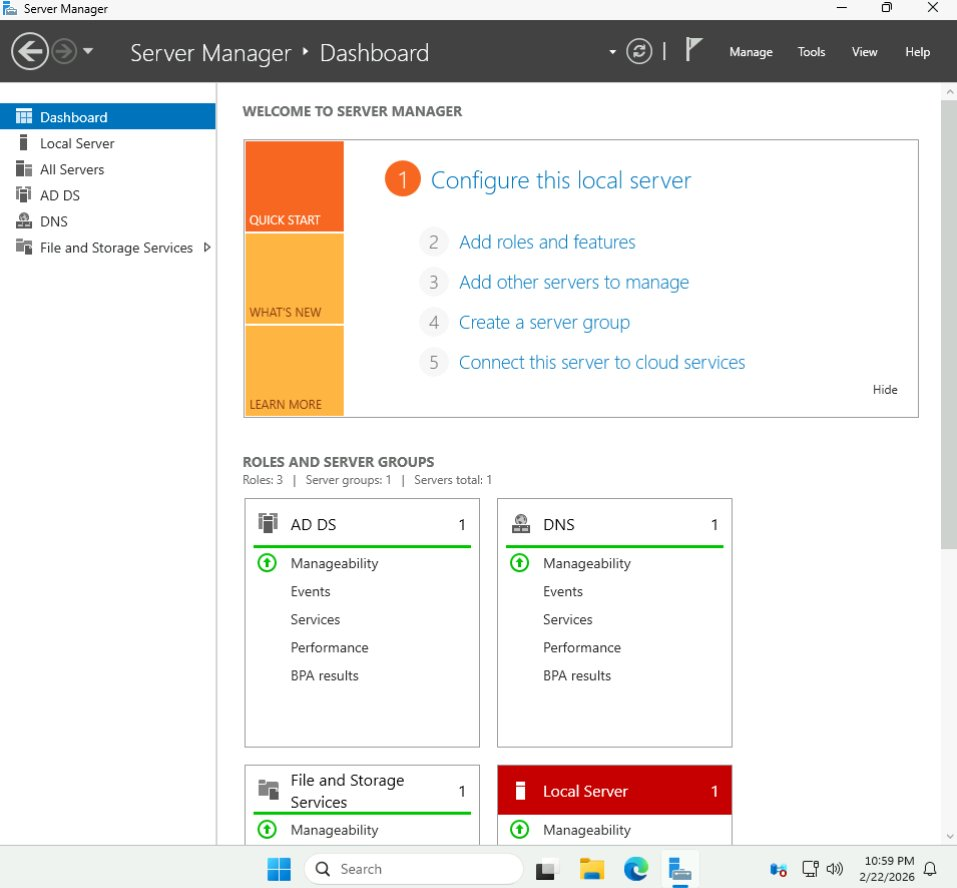
Figure 4 - Server Manager dashboard confirming AD DS and DNS roles installed and running
Active Directory Users and Computers
Opened Active Directory Users and Computers from Server Manager > Tools. The dentist.local domain was visible with its default folders.
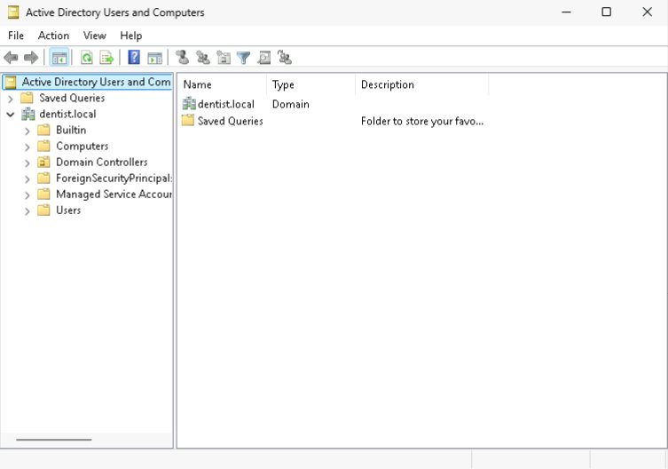
Figure 5 - Active Directory Users and Computers showing the dentist.local domain tree
Domain User Account Creation
Created three user accounts for the dentist office scenario. Hit a naming conflict on Admin - 'admin' is reserved by the system so I had to use 'adminuser' as the logon name. Password complexity was enforced throughout.
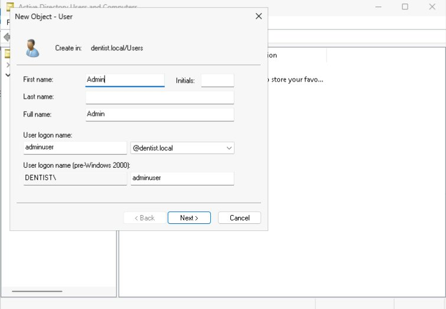
Figure 6 - New User wizard showing the Admin account being created with logon name adminuser@dentist.local
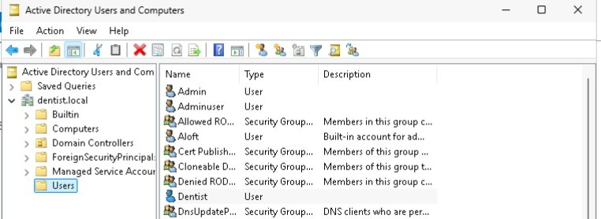
Figure 7 - Active Directory Users and Computers showing all three domain accounts created: Admin, Adminuser, Dentist, and OfficeManager
Inter-VM DNS Configuration
Ubuntu couldn't find dentist.local until I pointed its DNS at the Windows Server. Edited /etc/resolv.conf to add 10.21.28.244 as the nameserver. Without that, realm discover returns nothing.
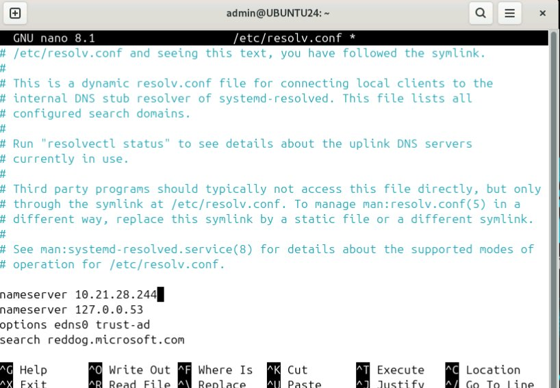
Figure 8 - /etc/resolv.conf on UBUNTU24 with SERVER25's IP (10.21.28.244) added as the primary nameserver
Ubuntu Domain Discovery
After fixing DNS, realm discover found the domain and confirmed the machines could communicate. It also listed the packages still needed to complete the join.
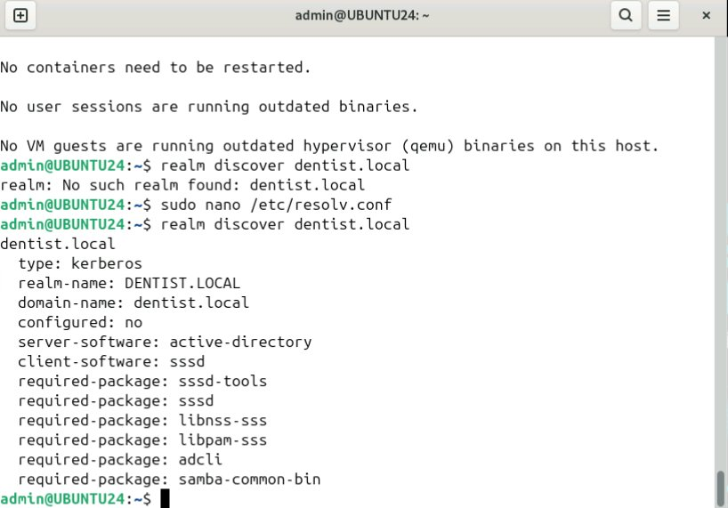
Figure 9 - realm discover dentist.local output on UBUNTU24 showing successful domain discovery
Observations & Troubleshooting
Ubuntu repos were broken: Ubuntu 24.10 is end-of-life so apt couldn't find packages. Fixed it by adding a sources file pointing to old-releases.ubuntu.com.
'admin' username was taken: AD already reserves an admin account so I had to use 'adminuser' as the logon name instead.
Password rules: AD rejected simple passwords. Also wouldn't let the Dentist account use 'Dentist' in the password since it matches the username.
Domain join kept failing: realm join failed repeatedly. The CyberHub password wasn't the same as the domain admin password, resolv.conf kept resetting, and missing packages caused issues. Decided to redo the whole thing locally in VirtualBox for more control.
CW-2 - [Title TBD]
[This section will be added when the next assignment is released.]
CW-1 Continued - Environment Reset & Local VM Setup
Decided to scrap the CyberHub setup and redo this locally in VirtualBox. CyberHub made it hard to know what was going on - passwords and network settings were handled by the platform so I couldn't see or control them. Doing it on local VMs means I set everything up myself and actually understand what each piece is doing. The CyberHub work above is kept since it documents the first attempt and everything that went wrong.
Local VM Environment:
• VM 1 - Windows Server 2025 (Domain Controller)
• VM 2 - Ubuntu 24 Linux
VM Configuration
Both VMs were created in VirtualBox with the following specs:
SERVER25:
• ISO: Windows Server 2025 Standard Evaluation (Microsoft Evaluation Center)
• RAM: 4096 MB
• Disk: 50 GB VDI dynamically allocated
UBUNTU25:
• ISO: Ubuntu 24.04.4 LTS Desktop (64-bit)
• RAM: 4096 MB
• Disk: 25 GB VDI dynamically allocated
Network Adapter Configuration
Each VM was given two network adapters. Adapter 1 is NAT for internet access. Adapter 2 is set to Internal Network (named intnet) to create an isolated private network between the two VMs. Using an isolated internal network is more secure than letting the VMs share the same NAT network - it keeps domain traffic contained and separate from the internet-facing adapter.
SERVER25's Ethernet 2 (the internal adapter) was given a static IP of 192.168.1.1 so Ubuntu always knows how to reach it. Ubuntu's internal adapter (enp0s8) was set to 192.168.1.2 with DNS pointing to 192.168.1.1.
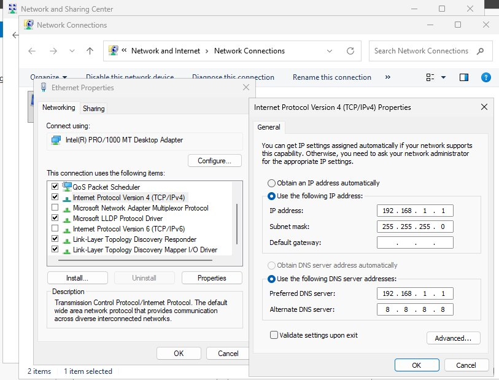
Figure 10 - SERVER25 Ethernet 2 static IP configuration: 192.168.1.1 / 255.255.255.0 with DNS pointing to itself
Both VMs Running
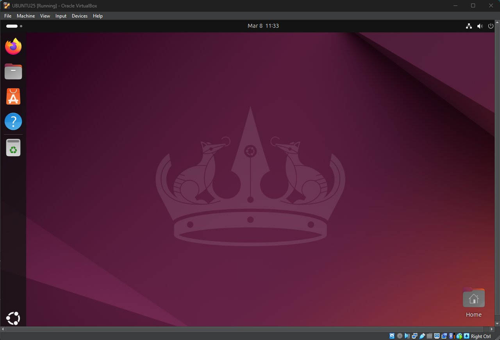
Figure 11 - Ubuntu 24.04 desktop running in VirtualBox after successful installation
Network Connectivity - SERVER25
Ran ipconfig /all on the local SERVER25 to confirm adapter settings. Adapter 1 (NAT) received a DHCP address from VirtualBox. Adapter 2 (Internal) confirmed the static IP 192.168.1.1.
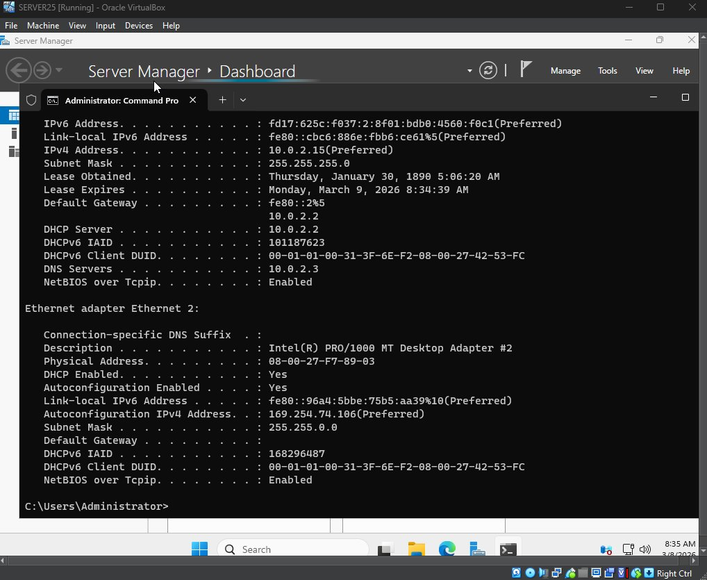
Figure 12 - SERVER25 ipconfig /all on local VirtualBox VM showing NAT and internal network adapter settings
Active Directory Domain Services Installation
Installed AD DS the same way as the CyberHub attempt - through Server Manager > Add Roles and Features. Selected Active Directory Domain Services, added the required features, and let it install.
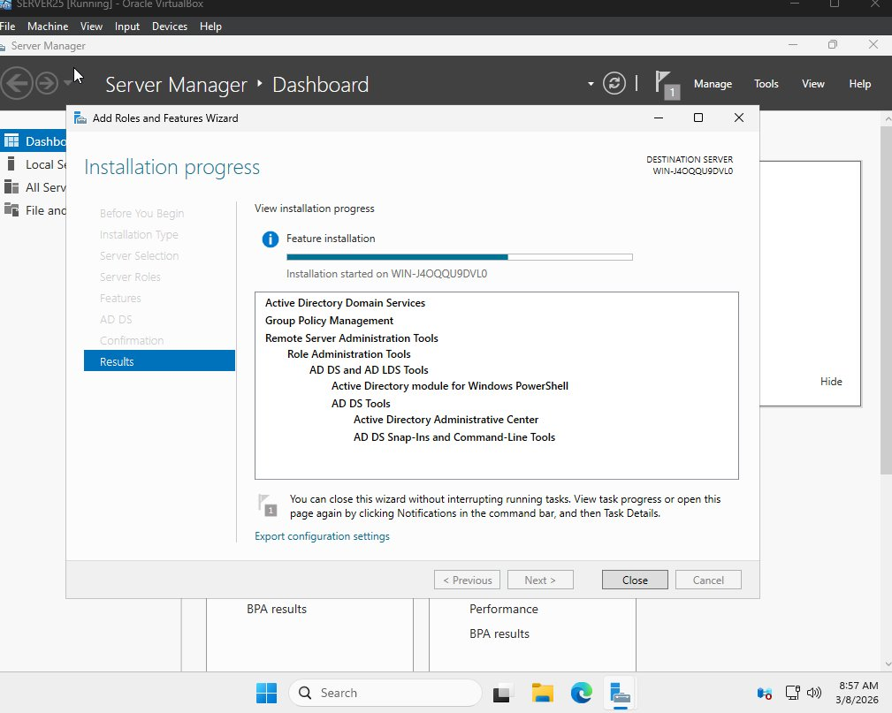
Figure 13 - AD DS installation progress on local SERVER25 VM showing all components installing successfully
Promoting to Domain Controller
After install, clicked the yellow flag notification in Server Manager to promote the server to a domain controller. Created a new forest named dentist.local.
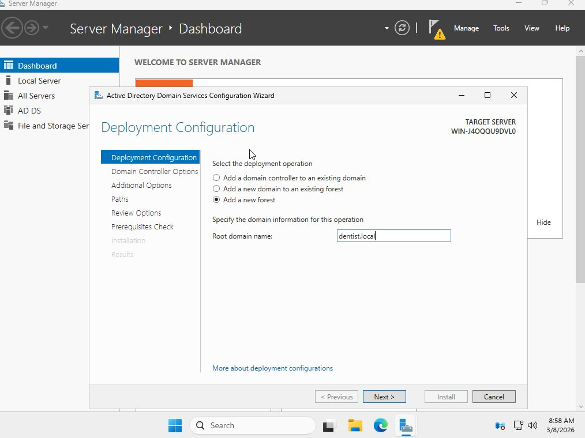
Figure 14 - AD DS Configuration Wizard showing Add a new forest with dentist.local as the root domain name
Post-Reboot Confirmation
Server rebooted automatically after promotion. Server Manager came back with AD DS and DNS both green, confirming the domain controller is running correctly.
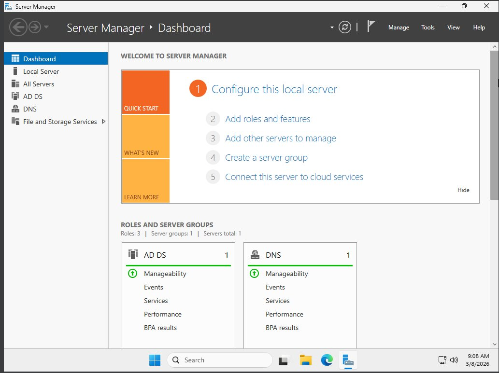
Figure 15 - Server Manager dashboard after reboot showing AD DS and DNS roles installed and running
Active Directory Users and Computers
Opened Active Directory Users and Computers from Tools. The dentist.local domain tree was visible with all its default containers.
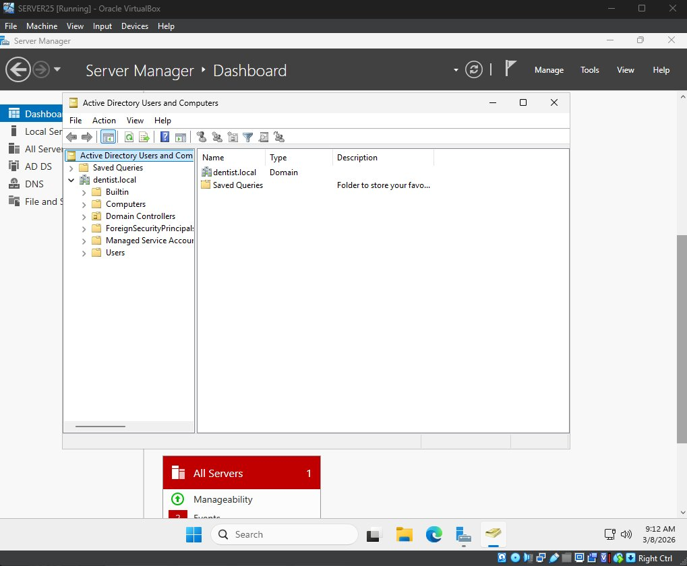
Figure 16 - Active Directory Users and Computers showing the dentist.local domain tree with all default containers
Domain User Account Creation
Created the same three user accounts as before for the dentist office scenario: Admin, OfficeManager, and Dentist. Same password complexity rules applied.
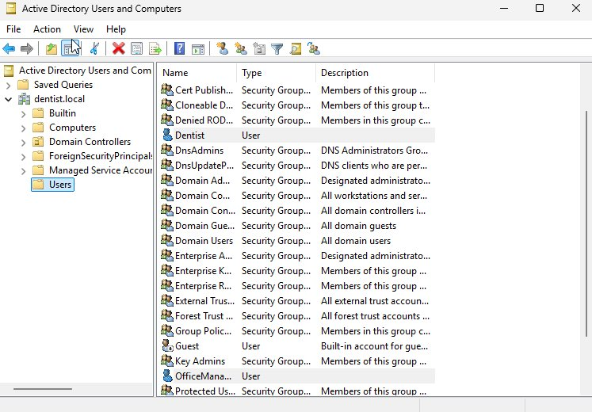
Figure 17 - Users container showing Dentist and OfficeManager accounts created in the dentist.local domain
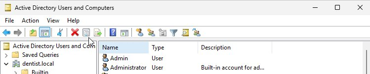
Figure 18 - Users container showing the Admin account created in the dentist.local domain
Ubuntu Network Configuration
On Ubuntu, the second adapter (enp0s8) was configured with a static IP through the GUI in Settings > Network. Set IP to 192.168.1.2, subnet 255.255.255.0, and DNS to 192.168.1.1 pointing at SERVER25. This is what allows Ubuntu to resolve the dentist.local domain.
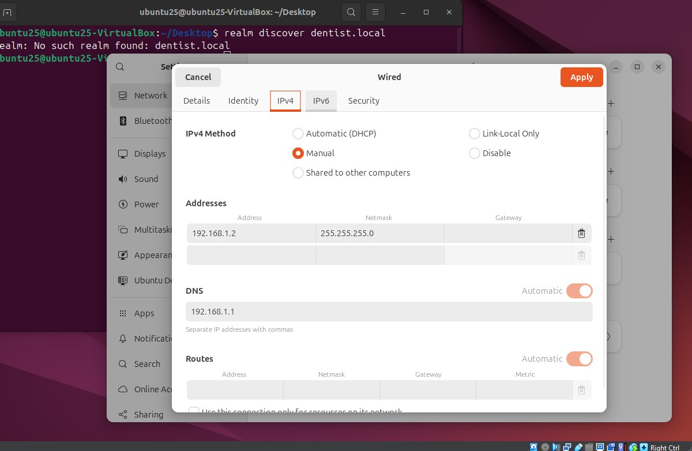
Figure 19 - Ubuntu enp0s8 IPv4 settings configured with static IP 192.168.1.2 and DNS pointing to SERVER25 at 192.168.1.1
Ubuntu Domain Discovery
After configuring the static IP and DNS on Ubuntu's internal adapter, realm discover successfully found the dentist.local domain. This confirmed that the two VMs can communicate over the isolated internal network and that Ubuntu can reach the domain controller.
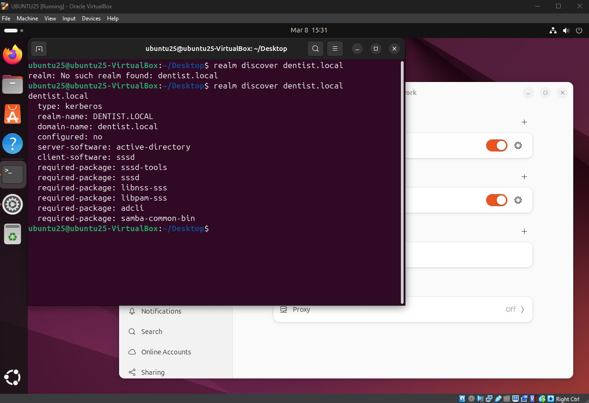
Figure 20 - realm discover dentist.local output on Ubuntu showing successful domain discovery with DENTIST.LOCAL realm visible
Observations & Troubleshooting
Ubuntu login freeze: After installing Ubuntu, the login screen would accept the password but then freeze. Fixed it by increasing the VM's video memory from 16 MB to 128 MB in VirtualBox display settings.
IP conflict on adapters: Initially tried to set 192.168.1.1 on Adapter 1 (NAT) but VirtualBox warned that the same IP was already assigned to Adapter 2. Had to keep Adapter 1 on DHCP and assign the static IP only to Adapter 2.
realm discover failing: Ubuntu couldn't find dentist.local until the internal network adapter was given a static IP with DNS pointed at SERVER25. NAT adapters on VirtualBox are isolated from each other so they can't communicate directly.
Server 2025 domain join note: The professor's course video noted that Windows Server 2025 uses enhanced encryption that breaks the default SSSD join method. The correct command requires adding --membership-software=samba to force the use of Samba WinBind instead.
Ubuntu Domain Join
Once the domain was set up on SERVER25 and Ubuntu had its network configured, the next step was getting UBUNTU25 to join the dentist.local domain. I had to install some packages, edit a couple of config files, and run the join command. Server 2025 needs a special flag added to the join command, which the professor’s video covers.
Step 1 - Install Required Packages
First I installed everything Ubuntu needs to talk to an Active Directory domain:
sudo apt install realmd sssd sssd-tools samba-common-bin samba winbind libpam-winbind libnss-winbind packagekit -y
After installing, I ran realm discover to make sure Ubuntu could still see the domain:
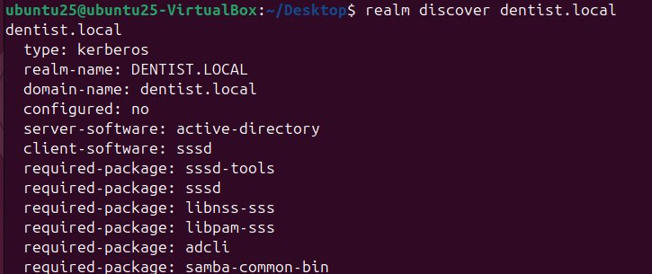
Figure 21 - realm discover dentist.local confirming domain is visible from Ubuntu after package installation
Step 2 - Configure /etc/samba/smb.conf
The default smb.conf that comes with the package is full of commented-out placeholder settings that caused problems. I replaced the whole thing with a short, clean version that just has what’s needed:
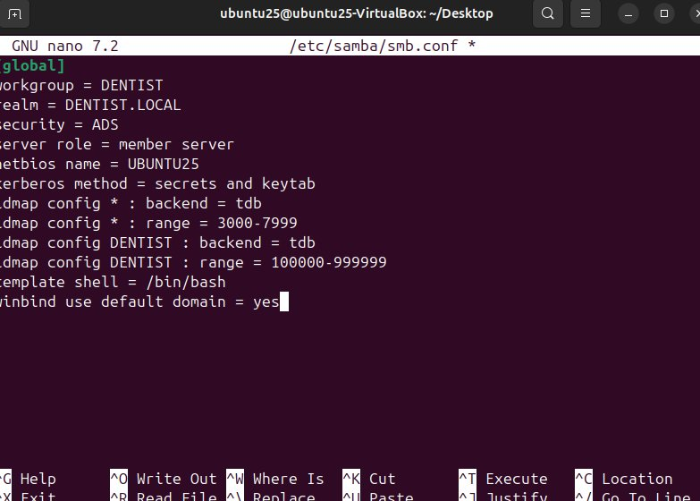
Figure 22 - Clean /etc/samba/smb.conf configured for member server role with DENTIST workgroup and ADS security
What the key settings do:
server role = member server - this tells Samba the machine is joining a domain, not running one.
security = ADS - this makes Samba use Active Directory to handle logins.
netbios name = UBUNTU25 - machine names on a domain can only be 15 characters max. The default hostname ubuntu25-VirtualBox is 20 characters and the join will fail because of it, so I set a short name here.
idmap config - this maps domain user accounts to Linux user IDs so the system knows who is who.
Step 3 - Configure /etc/realmd.conf
This was one of the bigger things I figured out. The realm join command doesn’t actually use the smb.conf file at all. It makes its own temporary config when it runs, so the computer name I set in smb.conf gets ignored. I had to create a separate file called /etc/realmd.conf and set the computer name there:
[service]
automatic-install = yes
[dentist.local]
computer-name = UBUNTU25
Without this file, the join command would cut the hostname down to UBUNTU25-VIRTUA, which is still too long and would cause the join to fail every time.
Step 4 - Validate Configuration
Before trying the join I ran testparm, which checks the smb.conf file for any mistakes. Everything came back clean:
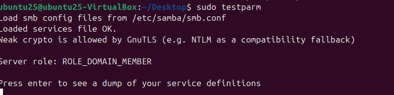
Figure 23 - testparm output showing Loaded services file OK and Server role: ROLE_DOMAIN_MEMBER with no warnings
Step 5 - Create the sssd Directory
This was the actual root cause of all the join failures. Everything else was working fine, but at the very end the join command tried to save a config file to a folder that didn’t exist yet. Once I created the folder, it worked:
sudo mkdir -p /etc/sssd
That one missing folder was causing the whole thing to fail at the finish line every single time.
Step 6 - Join the Domain
With everything set up, I ran the join command. The professor’s video specifically says to add --membership-software=samba when joining to Server 2025, because Server 2025 uses newer encryption that the default join method can’t handle:
sudo realm join dentist.local -U Administrator --membership-software=samba
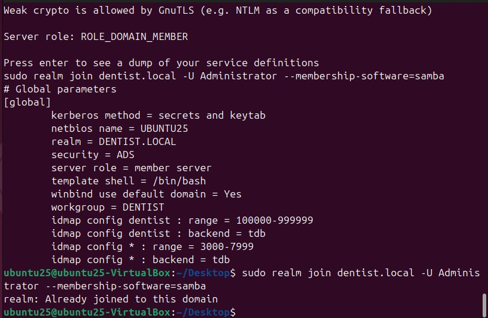
Figure 24 - realm join output showing Already joined to this domain, confirming the join worked
Step 7 - Verify Domain Membership
I ran realm list to double check that the join actually went through:
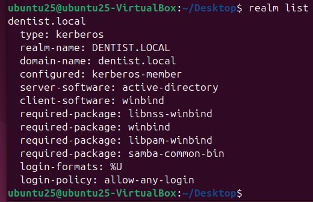
Figure 25 - realm list output showing dentist.local as configured: kerberos-member, which means the join was successful
Seeing kerberos-member means the machine is officially part of the domain. The system log also shows the exact line where it joined:
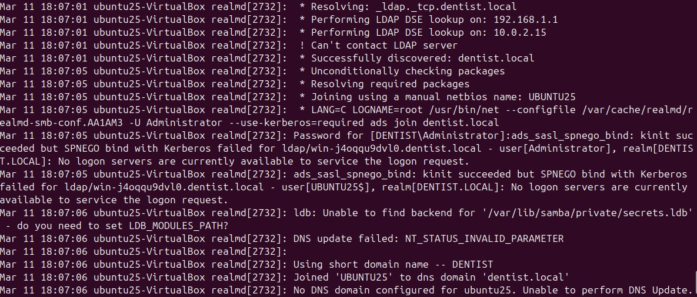
Figure 26 - system log output showing Joined UBUNTU25 to dns domain dentist.local
Step 8 - Enable Home Directory Creation
The professor’s video says Ubuntu needs one more setting turned on so that when a domain user logs in for the first time, the system automatically makes a home folder for them:
sudo pam-auth-update
In the menu that comes up, I checked Create Home Directory on Login and hit OK.
Observations & Troubleshooting
SMB signing conflict: Server 2025 uses a newer way of signing network traffic that the version of Samba on Ubuntu doesn’t support yet. This made the join fail early on. I temporarily turned off SMB signing on SERVER25 through PowerShell, ran the join, then turned it back on right away.
realmd ignores smb.conf: I spent a long time trying to fix the computer name in smb.conf before realizing it doesn’t matter. The realm join command makes its own config file and never reads smb.conf. The only way to set the computer name for the join is through /etc/realmd.conf.
Computer name too long: Domain computer names can only be 15 characters. My VM’s full hostname was 20 characters and the join kept failing because of it. Setting computer-name = UBUNTU25 in realmd.conf fixed it.
Missing folder: This turned out to be the actual problem the whole time. The join was completing successfully but then crashing at the last second because it needed to save a file to a folder that didn’t exist. Running sudo mkdir -p /etc/sssd to create the folder fixed it immediately.
Old computer accounts: Every failed join attempt left a leftover UBUNTU25 account in Active Directory. Before retrying the join each time, I had to open Active Directory Users and Computers on SERVER25 and delete the old account from the Computers folder first, otherwise the next attempt would conflict with it.
References
InfoSec Pat. (2024). How to setup and install Active Directory in Windows Server 2025 [Video]. YouTube. https://www.youtube.com/watch?v=LGTbKrKpPNo
Darien's Tips. (2024). Join Linux systems to a Windows Active Directory domain [Video]. YouTube. https://www.youtube.com/watch?v=UhYzoyQXXMA
Microsoft Corporation. (2024). Active Directory Domain Services overview. Microsoft Learn. https://learn.microsoft.com/en-us/windows-server/identity/ad-ds/get-started/virtual-dc/active-directory-domain-services-overview
Samba Team. (2024). Samba documentation: Joining a domain. https://www.samba.org/samba/docs/current/man-html/smb.conf.5.html
Ubuntu Community. (2024). Ubuntu 24.04 LTS documentation: Network configuration. https://ubuntu.com/server/docs/network-configuration
Anthropic. (2026). Claude (claude-sonnet-4-6) [Large language model]. Used as an AI assistant for troubleshooting and documentation guidance during lab work. https://www.anthropic.com
Independent Work
[This section is reserved for self-guided exploration and experiments done outside of directed assignments. Entries will be added throughout the semester.]
Original file: CIS3367 Living VM Document-2.docx (Word .docx)